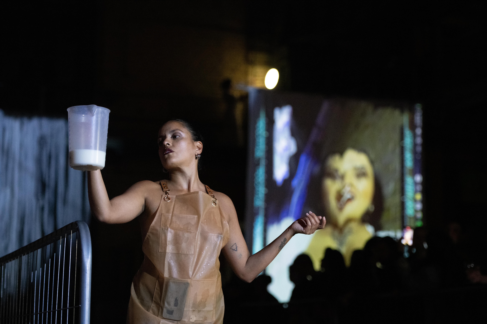
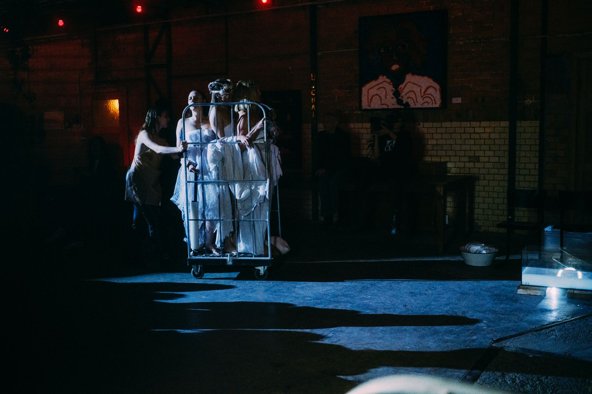

God Milk
Godmilk is a performance and audio-visual art installation that explores the intersections of the care economy, capitalist extractivism, and the gamification of female bodies. Set in a milk factory designed as an immersive environment, the project reflects the commodification of female bodies and motherhood.
Concept and Performance
Godmilk investigates the care economy by examining the historical roles women have been assigned in caretaking and the societal expectations that accompany these roles. It critiques capitalist extractivism by highlighting how women’s bodies are commodified for profit, as well as the gamification of their lives through societal scoring systems. The project delves into how women are evaluated based on their productivity and recovery, drawing parallels with video game mechanics that reward performance.
At the core of Godmilk are three postpartum mothers who pump breast milk live on stage. This act serves as both a literal and metaphorical representation of the systemic life force that breast milk embodies, while also critiquing the exploitation of women’s bodies in the capitalist economy. The installation utilizes breast milk as a powerful symbol, drawing parallels between the commodification of female bodies and the treatment of dairy cows in milk production.

About the Piece
How can we seamlessly integrate the body and technological elements to add a deeper layer to live performance?
In GODMILK, the mechanical presence manifests in different ways. The architecture and reverberation of the space set a specific tone. Sound dynamically guides the audience, pulling them into the piece through sonic layers to create a mental state for the audience, while also directing the performers’ actions.
Once everything is set, once the atmosphere is charged and wet, the bodies enter— the living elements that give the performance its meaning.
This brings up the question: how do digital technologies enhance the body? Screens struggle to reach the visceral level of the body, but in the best cases, they offer new ways to think about it…the mutual assimilation/ incorporation of one to the other.
One of them is through Body Augmentation. In GODMILK, characters approach the camera as if checking their connection with a machine-game, a sort of paranormal entity. In this case, the image and sound seem to cue the bodies in time, as if this combination of stimuli could somehow synchronize them. On one side, sound represents the cycles of performance, the flow of time. On the other, the image serves as a rupture, breaking apart everything that has been established. It’s as if the characters experience despair, triggered by this encounter with the machine. This Giant mechanical system displaying tiny human souls are an evocative metaphor for the ways that technology not only magnifies the body, but also changes what the body is.
After this encounter, the bodies withdraw—disjointed, fragmented, and disoriented—trapped in a specific space and time. The disharmony generated by this meeting with the machine becomes part of the narrative, an intruding plane that enters like an electronic hallucination. But at the same time the “score” or synchronization rate is an inconceivable high number, indicating that, despite the terror it provoques, the only hope for humankind is to move towards increased intimacy- permeability penetrability with the mechanical other.
Once the machine has completed its mission, it returns to a “harmonic” state. The animated, looping milk accompanies the entrance of a new character on stage, and this cycle repeats itself several times. To explore the aspects of human sexuality/ nature involving bodily conjoining, intimacy , and permeability played out through a cyborgish subject in a Juxtaposition of realities. The cyborgian replication immediately underscores the fact that this performance theme is the problematic of sexuality motherhood in a posthuman subject..
How we experience this medium, as well as of weather and how can we read it: as an intentional or unintentional political statement, a reflection of cultural anxieties. Cyborgs are not about the future, they are about contemporary society and its current transformations. We cannot prevent ourselves from interfacing/Synchronizing with the machine.
Presentations
2024- berlin Art Week
2025- Diaspora festival.

